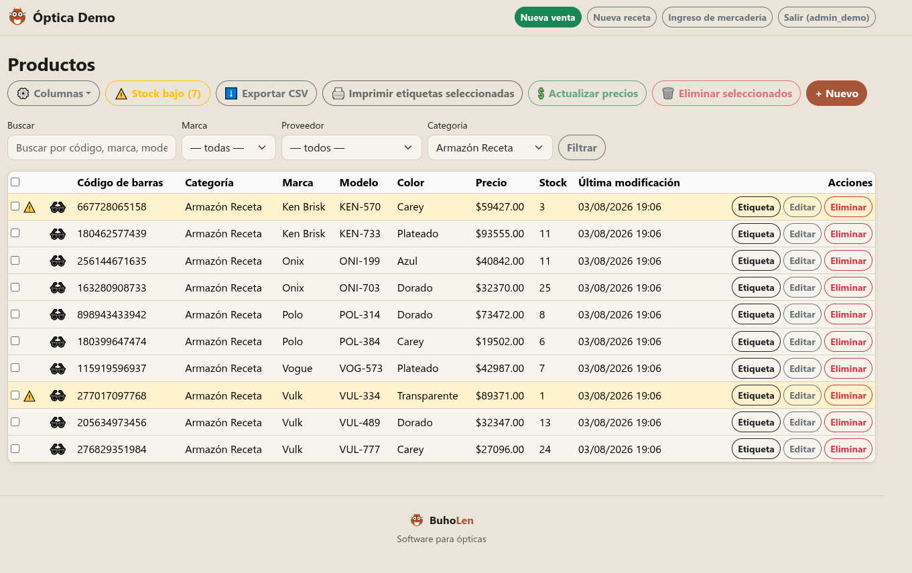

Gestor de stock y ventas
Un sistema para que la óptica deje de llevar todo a mano
- Descuenta el stock automáticamente al vender, con lector de código de barras
- Gestiona las ventas por obra social.
- Muestra cuánto facturó cada vendedor y qué productos se venden más
- Agregá productos de forma rápida. Actualizá los precios de forma sencilla